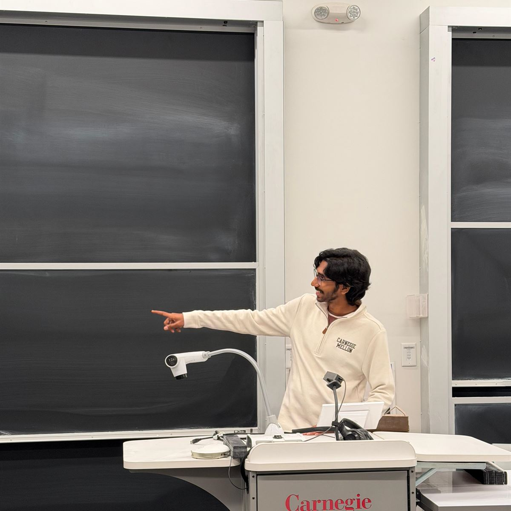
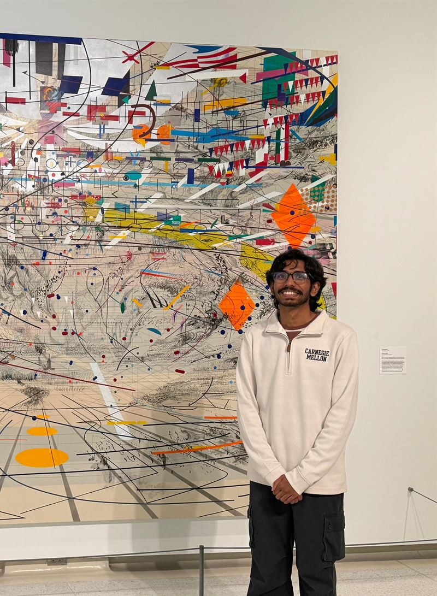

Silicon Engineering Intern · May–Jul 2026
Worked on static timing analysis and timing closure.
Hardware engineer working on FPGA accelerators and ML hardware. Silicon intern at Google, FPGA intern at Aramas.ai, research at IISc.
IIT Kharagpur · Microelectronics & VLSIDual Degree '27CGPA 9.14
Silicon Engineering Intern · May–Jul 2026
Worked on static timing analysis and timing closure.
FPGA Research Intern · Jan–Apr 2026
Worked on FPGA-based hardware acceleration.
IISc Bangalore · May 2025 – Jan 2026
Three-stage dataflow FlashAttention on an Alveo V80 with a numerically stable online softmax. 2.9× lower latency than the baseline.
ISFPGA ’26 paper ↗IIT Kharagpur · Mar–Aug 2025
Configurable fixed-point MLP on a Zynq-7000: pipelined MAC array and a CORDIC tanh, timing closed at 200 MHz.
Q-Data ’26 · with P. Kulkarni
Set-similarity joins using quantum amplitude estimation, with a provably optimal quadratic speedup.
Paper ↗Inter IIT Tech Meet 14.0 · Silver · Team captain
20-bit ΔΣ ADC: CIFF modulator into a CIC + FIR decimator, taken to GDSII. 19.44 ENOB at 2 KSPS.
IIT Kharagpur · Sep–Nov 2025
Event-driven, bit-parallel stuck-at fault simulator with fault collapsing. 100% coverage on ISCAS-85 c17.
B.Tech project · 2025–26
Hankel-lifted Robust PCA that recovers multitone signals from sparse non-linear folding distortions.
TeamKART Electric · Head of Electrical
Led a 40+ member team on the electrical side of an FSAE car: 88 V / 200 A powertrain, CC-CV charger, safety circuits.
Embedded Intern · Jun–Jul 2024
STM32 battery management for a 160 V pack: CAN, a Kalman-filter SoC estimator, a TouchGFX display.
Kraków · 2025
Top 15 of 70 finalist teams. Five designs on a Kria KV260 through a Jenkins-driven Vivado flow.
Hamilton · Ferrari
Lewis Hamilton fan. Ferrari, every season.
Latest stop: Pittsburgh
Most recent trip: Pittsburgh, visiting Carnegie Mellon.
Mostly sci-fi
Favourite: The Three-Body Problem.
The bookshelf ↓Timing diagram
Each signal is high while I was on it. Click a trace to zoom into its block.
Publications
K. S. Rathva, Aakarsh Alam, S. Srinivasan, S. K. Mandal · ACM/SIGDA FPGA · Poster
Aakarsh Alam, P. P. Kulkarni · Workshop on Quantum Computing for Data-Intensive Systems
Personal


Reading
Favourite · The Three-Body Problem
Click a star to give away its position. Photoids, droplets and dual-vector foils answer.